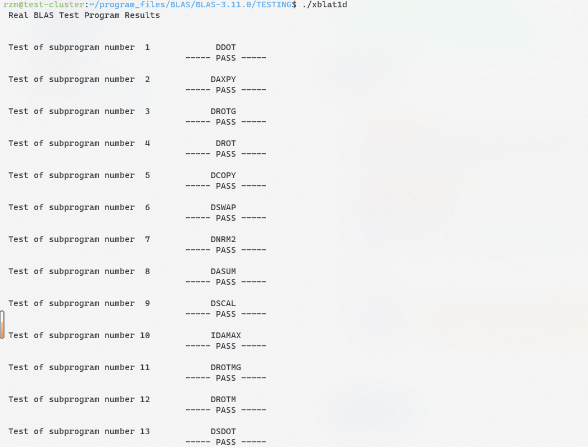
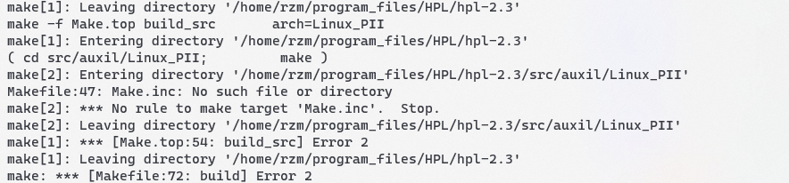
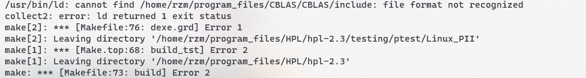
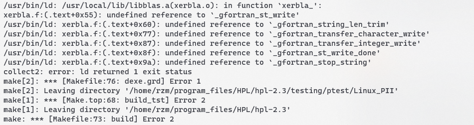
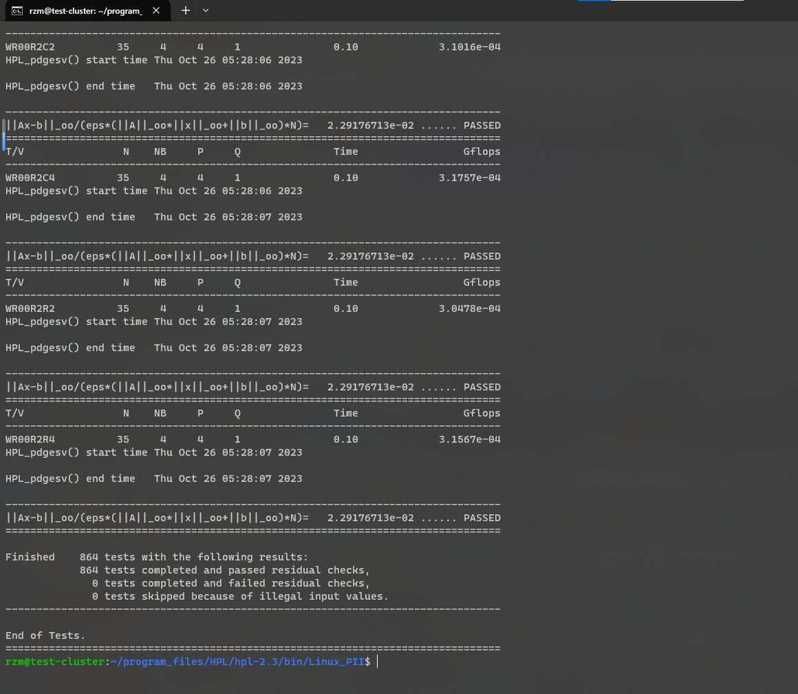
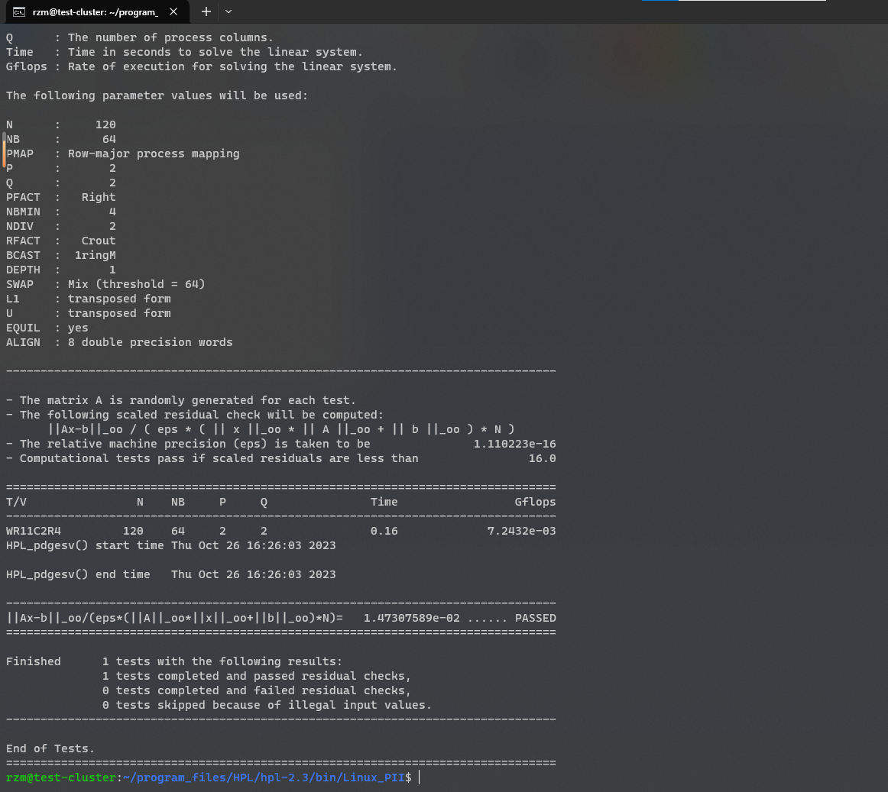
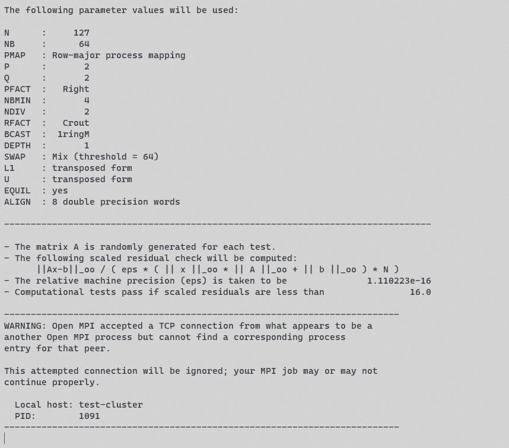
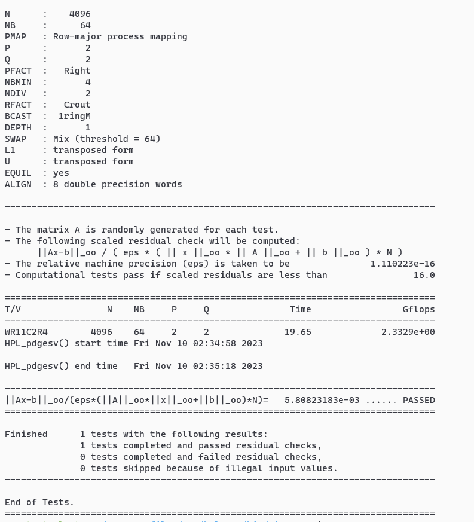
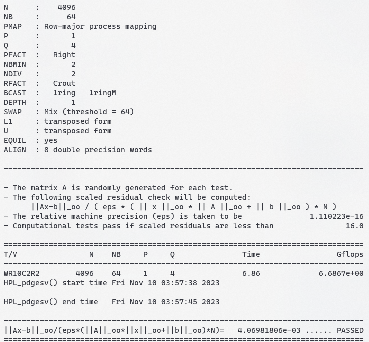

HPC101 Lab1 Report
HPC101 Lab1 report
1. 搭建虚拟机并配置网络
creating virtual machines
hypervisor: Virtual Box 7.0.10
OS in virtual machine: Ubuntu 22.04 LTS
memory: 2048 MB
core per node: 1
install necessary tools
1
2
3sudo apt install build-essential # gcc,g++,gdb,make...
sudo apt install net-tools # ifconfig
sudo apt install gfortran # gfortrannetwork settings
hypervisor network settings

virtual network card
use two network cards, enp0s3 (NAT) for the access to the Internet, enp0s8(Host-Only) for the communication with other nodes
virtual node interal network settings
edit the ip address of each node in
/etc/netplan/00-installer-config.yaml, or just add the linesudo ifconfig enp0s8 <ip address>in~/.bashrc
take the node1 for example:
enp0s3: the NAT network card.
enp0s8: the Host-Only network card. To have a fixed address, disable the dhcp4 service and set the address192.168.56.200.edit
/etc/hosts/
ssh settings
1
2
3
4
5
6
7
8create the ip_rsa and ip_rsa.pub in ~/.ssh
ssh-keygen
send the public key to other nodes
ssh-copy-id -i ~/.ssh/id_rsa.pub rzm@node2
log in other nodes
ssh rzm@node2By the way, you can use ssh to log in nodes from the terminal in phicisal machine to boost your efficiency.
2. 安装依赖库与软件
install OpenMPI
build
1
2
3
4
5
6
7
8
9
10preparation
wget https://download.open-mpi.org/release/open-mpi/v4.1/openmpi-4.1.6.tar.gz
tar -xvf openmpi-4.1.6.tar.gz
cd openmpi-4.1.6
build
check the environment and set the installation path
./configure --prefix=/usr/local/openMPI
make
sudo make installset environment variable, by adding some line in
~/.bashrc1
2
3
4path is split by ':'
the command below add the path of openMPI to the beginning of $PATH when the virtual machine starts
export PATH="/usr/local/openMPI/bin:$PATH"
export LD_LIBRARY_PATH="/usr/local/openMPI/include:$LD_LIBRARY_PATH"test
edithost_file:1
2
3
4node1 slots=1
node2 slots=1
node3 slots=1
node4 slots=1check the uptime of each node
1
mpirun --hostfile host_file uptime
use a C program to test OpenMPI
1
2
3
4
5
6
7
8
9
10
11
12
13
14
15
16
17
18
19
20
21// ~/workspace/test/mpi_hello_world.c
int main(int argc,char** argv) {
MPI_Init(NULL,NULL);
int world_size;
MPI_Comm_size(MPI_COMM_WORLD, &world_size);
int world_rank;
MPI_Comm_rank(MPI_COMM_WORLD, &world_rank);
char processor_name[MPI_MAX_PROCESSOR_NAME];
int name_len;
MPI_Get_processor_name(processor_name, &name_len);
printf("Hello world from processor %s, rank %d out of %d processors\n",
processor_name, world_rank,world_size);
MPI_Finalize();
}1
2
3
4
5
6
7
8
9
10compile
mpicc mpi_hello_world.c -o mpi_hello_world
copy the program and hostfile to other nodes
scp mpi_hello_world host_file rzm@node2:/home/rzm/workspace/test/
run
mpirun --hostfile host_file mpi_hello_world
Hello world from processor test_cluster, rank 1 out of 4 processors
Hello world from processor test_cluster, rank 0 out of 4 processors
Hello world from processor test_cluster, rank 2 out of 4 processors
Hello world from processor test_cluster, rank 3 out of 4 processorsIt shows that OpenMPI runs smoothly
reference:
install BLAS
build
1
2
3
4
5
6
7
8preparation
wget http://www.netlib.org/blas/blas-3.11.0.tgz
tar -xvf blas-3.11.0.tgz
build
cd BLAS-3.11.0
make
cp blas_LINUX.a /usr/local/lib/libblas.aget the file
blas_LINUX.a. copy it to/usr/local/lib/libblas.atest
1
2
3cd TESTING
make # generate some executable file like xblat1c,xblat1d...
./xblat1c # run some of them to test BLAS
and it works well.
install CBLAS
build
1
2
3preparation
wget http://www.netlib.org/blas/blast-forum/cblas.tgz
tar -xvf cblas.tgzedit
Makefile.in:1
2
3
4
5
6#-----------------------------------------------------------------------------
# Libraries and includes
#-----------------------------------------------------------------------------
BLLIB = /usr/local/lib/libblas.a # change to the path of your BLAS lib
CBLIB = ../lib/cblas_$(PLAT).a
make will encounter an error like this:
make[1]: Entering directory '/home/rzm/program_files/CBLAS/CBLAS/testing'
gcc -I../include -O3 -DADD_ -c c_sblas1.c
gfortran -O3 -c c_sblat1.f (or c_dblat1.f)
c_sblat1.f:214:48:
214 | CALL STEST1(SNRM2TEST(N,SX,INCX),STEMP,STEMP,SFAC)
| 1
Error: Rank mismatch in argument ‘strue1’ at (1) (scalar and rank-1)
c_sblat1.f:218:48:
218 | CALL STEST1(SASUMTEST(N,SX,INCX),STEMP,STEMP,SFAC)
| 1
Error: Rank mismatch in argument ‘strue1’ at (1) (scalar and rank-1)
There are some syntax errors in c_sblat1.f and c_dblat1.f, solution:
1 | IF (ICASE.EQ.7) THEN |
after this fix, it succeed. And we get the file cblas_LINUX.a in lib. copy it to /usr/local/lib/libcblas.a
3. 安装 HPL
build
1
2
3
4
5
6
7preparation
wget https://netlib.org/benchmark/hpl/hpl-2.3.tar.gz
tar -xvf hpl-2.3.tar.gz
cd hpl-2.3
cp setup/Make.Linux_PII_CBLAS ./Make.Linux_PII
make arch=Linux_PIIBefore make, we need to modify some parameters
Make.Linux_PII1
2
3
4
5
6
7
8
9
10
11
12
13
14ARCH = Linux_PII
TOPdir = /home/rzm/program_files/HPL/hpl-2.3 # 1
MPdir = /usr/local/openMPI
MPinc = -I$(MPdir)/include
MPlib = $(MPdir)/lib/libmpi.so
LAdir = /home/rzm/program_files/CBLAS/CBLAS
LAinc = # 2
LAlib = /usr/local/lib/libcblas.a /usr/local/lib/libblas.a -lgfortran # 3
CC = /usr/local/openMPI/bin/mpicc # the path of mpicc
LINKER = $(CC)TOPdirshould be the source code directory, otherwise you will encounter the following error:

By the way, if you meet this error, you should delete the whole folder and extract the file again, becausemake cleanwill also meet an error. (don’t forget to save the edited configuration file)LAincshould remain empty, if you fill in the path of CBLAS include, it will encounter an error like this:
LAlibshould contain the lib of CBLAS and BLAS, and the parameter-lgfortranis necessary because the librarylibgfortran.ais needed, otherwise you will encounter the followint error:

After HPL is successfully built, we will get an executable file
xhpland a configuration fileHPL.datin{HPL path}/bin/. Those are what we need.
reference:
- https://netlib.org/benchmark/hpl/software.html
- https://gist.github.com/Levi-Hope/27b9c32cc5c9ded78fff3f155fc7b5ea
- https://suhu0426.github.io/Web/Howto-Install/HPL.html
- https://superuser.com/questions/272463/makefile-fails-to-install-file-correctly-installing-hpl
4. 进行实验
I carried out two tests with different parameters, and got the following results:
original HPL.dat

change some parameters:
1
2
3
4
5
6
7
8
9
10
11
12
13
14
15
16
17
18
19
20
21
22
23
24
25
26
27
28
29
30
31HPLinpack benchmark input file
Innovative Computing Laboratory, University of Tennessee
HPL.out output file name (if any)
6 device out (6=stdout,7=stderr,file)
1 # of problems sizes (N)
120 Ns
1 # of NBs
64 NBs
0 PMAP process mapping (0=Row-,1=Column-major)
1 # of process grids (P x Q)
2 Ps
2 Qs
16.0 threshold
1 # of panel fact
2 PFACTs (0=left, 1=Crout, 2=Right)
1 # of recursive stopping criterium
4 NBMINs (>= 1)
1 # of panels in recursion
2 NDIVs
1 # of recursive panel fact.
1 RFACTs (0=left, 1=Crout, 2=Right)
1 # of broadcast
1 BCASTs (0=1rg,1=1rM,2=2rg,3=2rM,4=Lng,5=LnM)
1 # of lookahead depth
1 DEPTHs (>=0)
2 SWAP (0=bin-exch,1=long,2=mix)
64 swapping threshold
0 L1 in (0=transposed,1=no-transposed) form
0 U in (0=transposed,1=no-transposed) form
1 Equilibration (0=no,1=yes)
8 memory alignment in double (> 0)
Interestingly, if the scale Ns is no more than 126, the result will be as above. However, when Ns exceed 127, the test will stuck like this:

I refer to https://www.mail-archive.com/users@lists.open-mpi.org/msg34182.html, and find the solution: add parameter --mca btl_tcp_if_include enp0s8 in command to restrict the network openMPI use to Host-Only. Change parameters again and it works well:

And the Gflops also increase.
further tuning:

reference:
- How to compile and run HPL LINPACK on Ubuntu 22.04
- Official tuning documentation for the HPL Benchmark
- https://wu-kan.cn/2020/11/25/%E8%B6%85%E7%AE%97%E9%98%9F%E5%86%85%E5%9F%B9-HPL%E4%BD%9C%E4%B8%9A%E6%80%BB%E7%BB%93/
- A tool to create HPL.dat file
- https://www.mail-archive.com/users@lists.open-mpi.org/msg34182.html